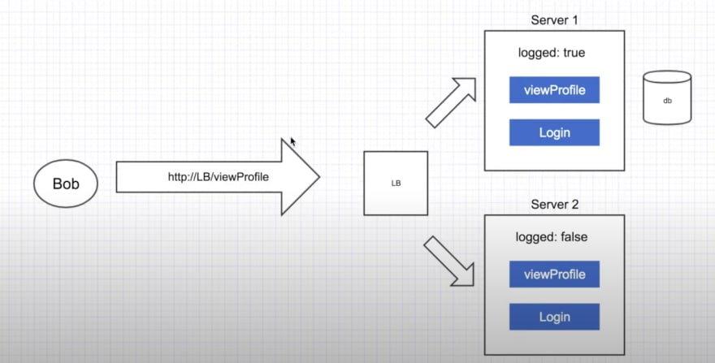
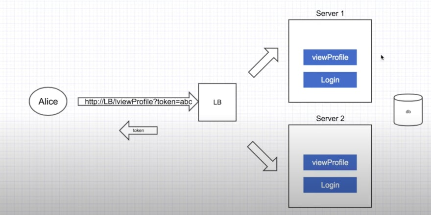
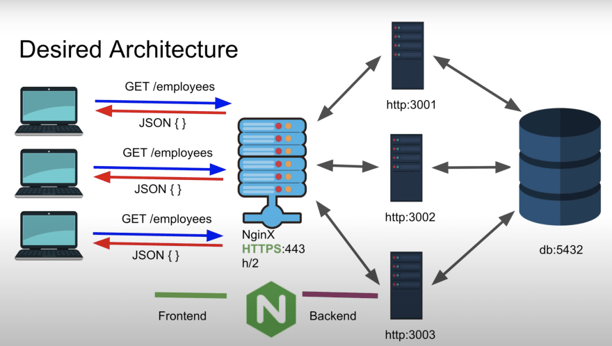
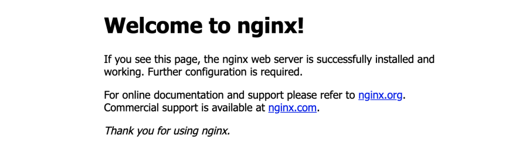

Nginx 是一个遵循主从架构的 Web 服务器，可以用作反向代理、负载均衡器、邮件代理和 HTTP 缓存。
哇！复杂的术语和混乱的定义，里面充斥着大量令人困惑的词语，对吧？不用担心，我可以帮大家先了解 Nginx 的基本架构和术语，然后我们将安装并创建 Nginx 配置。
为了让事情变简单，只需要记住：Nginx 是一个神奇的 Web 服务器。
简单来说，Web 服务器就像个中间人。比如你想访问 dev.to，输入地址 https://dev.to，你的浏览器就会找出 https://dev.to 的 Web 服务器地址，然后将其定向到后台服务器，后台服务器会把响应返回给客户端。
Nginx 的基本功能是代理，所以现在就需要了解什么是代理和反向代理。
好的，我们有一个或多个客户端、一个中间 Web 服务器（在这种情况下，我们称它为代理）和一个服务器。这其中最主要的事情是服务器不知道哪个客户端正在请求。是不是有点困惑？让我用一张示意图来解释一下。
在这种情况下，客户端 client1 和 client2 通过代理服务器向服务器发送请求 request1 和 request2，后台服务器不会知道 request1 是由 client1 还是 client2 发送的，只会执行操作。
用最简单的话来说，反向代理就是把代理的工作反过来。比方说有一个客户端、一个中间 Web 服务器和一个或多个后台服务器。让我们继续通过一张示意图解释吧！
在这种情况下，客户端将通过 Web 服务器发送一个请求，Web 服务器会通过一种算法将请求定向到众多服务器的任意一个，其中一种算法是轮询调度（Round-Robin）（最可爱的一个！），然后再将响应通过 Web 服务器返回给客户端。因此在这里，客户端并不知道与之交互的是哪一个后台服务器。
可恶，又是一个新词，但是这个词比较容易理解，因为它是反向代理本身的一个实际应用。
我们先说说基本的区别。在负载均衡中，必须要有两个或者更多的后台服务器，但在反向代理设置中，这不是必须的，它甚至可以只跟单台后台服务器一起使用。
让我们从幕后看一下，如果我们有大量来自客户端的请求，这个负载均衡器会检查每个后台服务器的状态并分配请求的负载，然后将响应更快地发送给客户端。
好的各位，我保证我很快就要讲到 Nginx 代码了，先让我们把所有的基本概念搞清楚！
这个应用程序存储了一个额外的变量，用于保存只适用于单个服务器实例的信息。

我的意思是，如果后端服务器 server1 存储了一些信息，那么它不会被存储在 server2 上，因此进行交互的客户端（这里指 Bob）可能得不到想要的结果，因为它可能会与 server1 或者 server2 交互。在这种情况下，server1 将允许 Bob 查看配置文件，但 server2 不会允许。因此，即使有状态应用阻止了许多 API 调用数据库，并且速度更快，但却可能会在不同服务器上导致上述问题。
现在，无状态是对数据库的 API 调用更多，但客户端与不同后台服务器交互时，存在的问题就更少了。。

我知道你没有明白我的意思。简单来说，如果我从客户端通过 Web 服务器向比如说后台服务器 server1 发送一个请求，它将向客户端提供一个令牌以用于访问其他任何请求。客户端可以使用令牌并将请求发送给 Web 服务器，该 Web 服务器将请求和令牌一起发送给任意后台服务器，每个服务器都将返回相同的期望输出。
Nginx 就是 Web 服务器，到目前为止，我一直在整篇博客中使用 Web 服务器这个词，老实说，它就像一个中间人。

这张图并不难懂，它只是结合了我到现在为止解释的所有概念。在这张图中，我们有 3 台分别运行在 3001、3002、3003 端口的后台服务器，这些后台服务器共同使用运行在 5432 端口的数据库。
现在，当客户端向 https://localhost（默认 443 端口）发送请求 GET /employees 时，Nginx 将根据算法把这个请求发送给任意一个后台服务器，后台服务器从数据库中获取信息，然后把 JSON 结果发送回 Nginx Web 服务器，Nginx 再发送回客户端。
如果我们要使用诸如轮询调度这样的算法，Nginx 会这样做：比如 client2 发送了一个请求到 https://localhost，那么 Nginx 服务器会先把请求传到 3001 端口，然后把响应返回给客户端。对于另一个请求，Nginx 会把请求传到 3002 端口，以此类推。
这也太多概念了吧！但是到此为止，你应该已经清楚地了解了什么是 Nginx 及其相关术语。现在，我们将继续了解 Nginx 的安装和配置。
终于到这一步了！如果你能理解 Nginx 概念并看到了代码这部分，那真是棒棒哒！
好的，老实说，在任何操作系统上安装 Nginx 都只需要一行命令。我是 Mac OSX 用户，所以会基于它来写命令。但对于 Ubuntu 和 Windows 以及其他 Linux 发行版，也有类似的命令。
$ brew install Nginx
只需要一行命令，你的系统就已经安装上 Nginx 了!非常 Amazing！
运行下面的命令来检查 Nginx 是否在你的系统上运行起来了，又是非常简单的一步。
$ nginx
# OR
$ sudo nginx
运行完命令之后，使用你最喜欢的浏览器访问 http://localhost:8080/，你将在屏幕上看到下面的画面！

好的，我们将通过一个示例来展示 Nginx 的神奇之处。首先，在本地机器上创建如下的目录结构：
.
├── nginx-demo
│ ├── content
│ │ ├── first.txt
│ │ ├── index.html
│ │ └── index.md
│ └── main
│ └── index.html
└── temp-nginx
└── outsider
└── index.html
同时，在 html 和 md 文件中写上基本的上下文内容。
在这里，我们有两个单独的文件夹 nginx-demo 和 temp-nginx，每个文件夹都包含静态 HTML 文件。我们将专注于在一个共同端口上运行这两个文件夹，并设置我们喜欢的规则。
现在回到正轨。我们可以通过修改位于 /usr/local/etc/nginx （译者注：默认安装路径）路径下的 nginx.conf 文件，实现对 Nginx 默认配置的任何改动。另外，我的系统中有 Vim，所以我将用 Vim 进行修改，你也可以自由使用所选的编辑器。
$ cd /usr/local/etc/nginx
$ vim nginx.conf
这将打开一个默认的 Nginx 配置文件，但我真的不想使用它的默认配置。因此，我通常会复制这个配置文件，然后对原文件进行修改。在这里我们也这样做。
$ cp nginx.conf copy-nginx.conf
$ rm nginx.conf && vim nginx.conf
现在打开一个空文件，我们将给它添加我们的配置。
添加一个基本配置。添加 events {} 是必须的，因为对于 Nginx 架构来讲，它通常被用来表示 Worker 的数量。我们在这里使用 http 来告诉 Nginx，我们将使用 OSI 模型 的第 7 层。
在这里，我们让 Nginx 监听 5000 端口，并指向 /nginx-demo/main 文件夹下的静态文件。
http {
server {
listen 5000;
root /path/to/nginx-demo/main/;
}
}
events {}
接下来我们将对 /content 和 /outsider URL 添加额外的规则，其中 outsider 将指向第一步中提到的根目录（/nginx-demo）以外的目录。
这里 location /content 表示无论我在子目录中定义了哪一个根目录，content 子 URL 都会被添加到定义的根目录末尾。因此，这里当我指定根目录为 root /path/to/nginx-demo/ 时，仅仅表示我告诉 Nginx 在 http://localhost:5000/path/to/nginx-demo/content/ 向我展示文件夹内静态文件的内容。
http {
server {
listen 5000;
root /path/to/nginx-demo/main/;
location /content {
root /path/to/nginx-demo/;
}
location /outsider {
root /path/temp-nginx/;
}
}
}
events {}
好酷！现在 Nginx 不仅限于定义根 URL，还可以设置规则，以便于我可以阻止客户端访问某些文件。
我们将在定义的主服务器中写入一条附加规则，用来阻止访问任何 .md 文件。我们可以在 Nginx 中使用正则表达式，规则定义如下：
location ~ .md {
return 403;
}
最后我们来学习一下流行的命令 proxy_pass。现在我们已经了解了什么是代理和反向代理，这里我们先定义另一个运行在 8888 端口的后台服务器，所以现在我们已经有了 2 个分别运行在 5000 和 8888 端口的后台服务器。
我们要做的是，当客户端通过 Nginx 访问 8888 端口时，将这个请求传到 5000 端口，并向客户端返回响应！
server {
listen 8888;
location / {
proxy_pass http://localhost:5000/;
}
location /new {
proxy_pass http://localhost:5000/outsider/;
}
}
http {
server {
listen 5000;
root /path/to/nginx-demo/main/;
location /content {
root /path/to/nginx-demo/;
}
location /outsider {
root /path/temp-nginx/;
}
location ~ .md {
return 403;
}
}
server {
listen 8888;
location / {
proxy_pass http://localhost:5000/;
}
location /new {
proxy_pass http://localhost:5000/outsider/;
}
}
}
events {}
通过 sudo nginx 来运行代码。
首次启动 Nginx Web 服务器。
$ nginx
#OR
$ sudo nginx
重新加载正在运行的 Nginx Web 服务器。
$ nginx -s reload
#OR
$ sudo nginx -s reload
关闭正在运行的 Nginx Web 服务器。
$ nginx -s stop
#OR
$ sudo nginx -s stop
查找有哪些 Nginx 进程正在系统中运行
$ ps -ef | grep Nginx
第 4 条命令很重要，当前 3 条命令出现错误时，可以使用第 4 条命令找到所有正在运行的 Nginx 进程，然后 kill 掉这些进程，重新启动 Nginx 服务。
要 kill 一个进程，你需要先知道它的 PID，然后用下面的命令 kill 它：
$ kill -9 <PID>
#OR
$ sudo kill -9 <PID>
在结束这篇文章之前，声明一下我所使用图片和视觉效果来自 Goole 图片和由 Hussein Nasser 提供的 Youtube 教程。
关于 Nginx 的基本认识和配置，我们就讲到这里。如果你对 Nginx 的进阶配置感兴趣，请通过评论告诉我。在此之前，请享受编程的乐趣，探索 Nginx 的魔力！👋
如果发现译文存在错误或其他需要改进的地方，欢迎到 掘金翻译计划 对译文进行修改并 PR，也可获得相应奖励积分。文章开头的 本文永久链接 即为本文在 GitHub 上的 MarkDown 链接。
掘金翻译计划 是一个翻译优质互联网技术文章的社区，文章来源为 掘金 上的英文分享文章。内容覆盖 Android、iOS、前端、后端、区块链、产品、设计、人工智能等领域，想要查看更多优质译文请持续关注 掘金翻译计划、官方微博、知乎专栏。